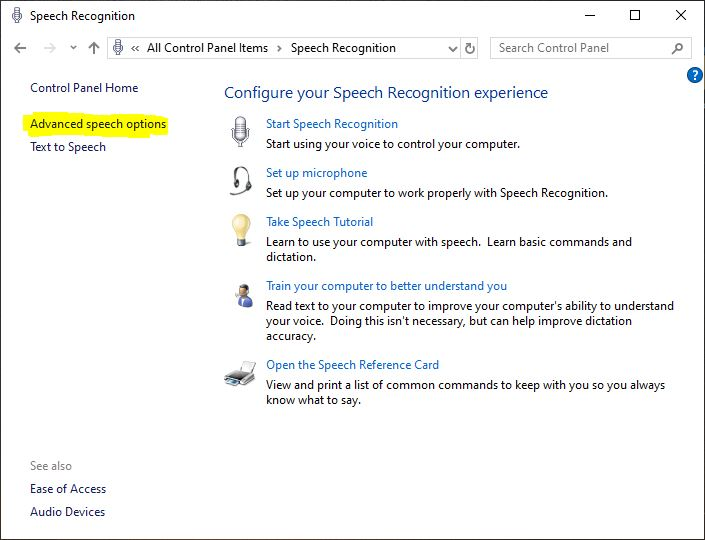
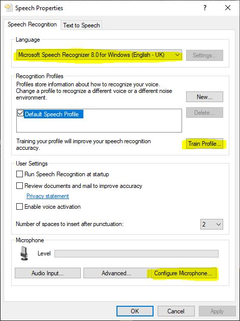
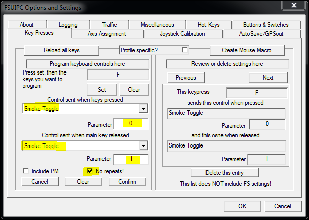
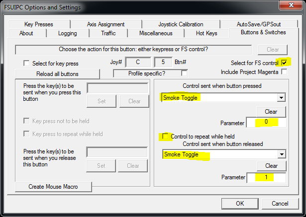

Installation
Copilot and FSLabs version compatibility
Installing only FSL2Lua
You can install FSL2Lua standalone (without Copilot) to bind your keyboard keys, joystick buttons and axes to FSLabs cockpit controls.
To do that, unzip Modules\FSL2Lua into your FSUIPC folder (the one with the FSUIPC dll).
Click here to read on how to create a script and tell FSUIPC to run it.
Installing Copilot
Unzip the content of the Modules folder into the the FSUIPC installation directory.
Unzip the content of the Prepar3D vx Add-ons folder into your Add-ons folder (eg C:\Users\Username\Documents\Prepar3D v4 Add-ons).
Run the simulator and respond to the prompt asking you to enable the addon.
After P3D has loaded into the main menu, you'll find the configuration file at FSUIPC directory/FSLabs Copilot/options.ini. Open it and adjust the settings.
The script will auto-run after you load a flight with FSLabs.
You can restart or stop the script (no need to do either during normal operation :) and output its log to the console (which needs to be enabled in the FSUIPC settings first) from its Add-ons submenu.
If anything goes wrong during the script's operation, look for any lua errors in FSUIPC6.log/FSUIPC5.log or anything unusual in Copilot.log (you can make it more verbose by setting log_level to 1).
If you want to extend the functionality of the script, see some examples here.
A few examples of binding cockpit controls to keyboard keys and joystick buttons
Setting up speech recognition
You need to have English as the Windows language in order for speech recognition to work
Go to Control Panel -> Speech Recognition -> Advanced speech options

Select English - UK or English - US as the language
Select Configure Microphone in the Microphone section
Train the profile with the Train Profile wizard

If you fly online, you'll want to bind your PTT key or button to mute Copilot:

